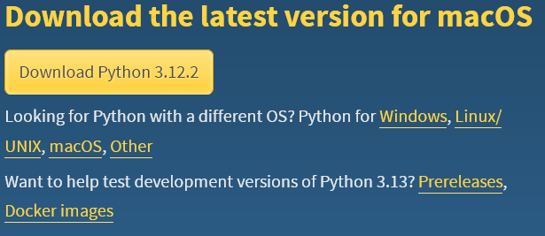
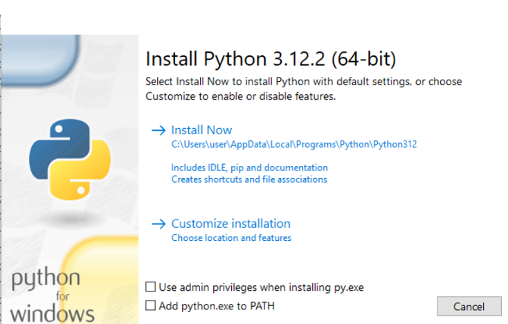

Python-ni tortib o'lish¶
Ho'zir biz python o'rnatuvchisini tortib olamiz
Windows foydalanuvchilariga¶
- Windows 11/10/8/8.1 foydalanuvchilarga: Python Downloads
Windows 10: Tortish uchun:
{kind=link}
- Windows 7 foydalanovchilar: Python 3.9
Windows 7: Tortish uchun eng pasga tushib:
{kind=link}
MacOS foydalanovchilariga¶
MacOS foydalanovchilari:
MacOS foydalanovchilari kamida macOS versiyasi (10.15) Catalina bolish kerak
{kind=link}
Linux foydalanuvchilarga
Linux foydalanuvchilarilarga o'rnatish paragrafida aytilgan
Python-ni o'rnatish¶
Python-ni endi o'rnatish kerak
Linux foydalano'vchilar uchun¶
Distributivingiz-ni tekshirish uchun neofetch-bilan tekshirsa boladi
Va siz ingiliz tilini o'qishni bilsayiz kerak?
Ubuntu¶
Sizda Python tayyor bolishini ishonch hosil qilish uchun bu paragrafga o'ting
Fedora¶
Sizda Python tayyor bolishini ishonch hosil qilish uchun bu paragrafga o'ting
Arch Linux¶
Arch Linux yoki unga oxshash distributivlarga, masalan (EndearvourOS)
Debian¶
Debian yoki unga oxshash distributivlarga, masalan (Ubuntu)
OpenSUSE¶
Python-ni o'rnatilganini tekshirish uchun¶
Terminal-ni ochib
Manashu kommanda bilan tekshirsa boladi
Windows foydalano'vchilarilari uchun¶
Windows 7 foydalanovchilariga
Windows 7-da tekshirilmagan!
Windows 8-ga yoki 10-ga yangilanish yahshiroq!
O'rnatuvchini ko'rinishi manabunday bolishi kerak: 
{kind=link}
Bu kerakli!
Bu juda muxim: Mana quydagi qora-chizilgan joylarni bosib qoyasiz

O'rnatishni boshlash:
{kind=link}
O'rnatilish jarayoni quydagi rasmga oxshashi kerak
{kind=link}
O'rnatilish tugagandan song:

MacOS foydalanovchilari uchun¶
- Bu yerda hali ishlar olib borilmoqdaPython o'rnatilganini tekshirish¶
Terminalda
yokiVa siz muvvofaqiyatli Python-ni o'rnattingiz!¶
Ana endi IDE-ni sozlash bolimiga oting!